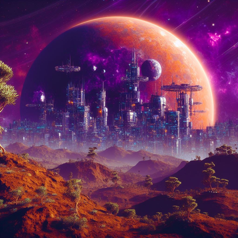

ABOUT THE EXOPLANET
Zephryon is located approximately 150 light-years away from Earth in the constellation of Aquilonis. It orbits the G-type star "Solara," which is similar in size and characteristics to our own sun.
Zephryon is a terrestrial exoplanet with a diameter about 1.5 times that of Earth.
GEOGRAPHY

The planet has a diverse climate due to its axial tilt, resulting in varied ecosystems and weather patterns. Zephryon has a breathable atmosphere with a composition similar to Earth, making it potentially habitable for humans.
The planet boasts vast, lush forests, expansive oceans, and towering mountain ranges. It is known for its breathtaking landscapes and unique geological formations. Zephryon orbits Solara at an average distance of approximately 120 million kilometers, putting it in the star's habitable zone.
LIFE

Zephryon's lush forests are home to a wide array of plant life, including towering trees, colorful flowering plants, and sprawling vines. Some of these species have evolved to exhibit bioluminescence, creating stunning nighttime displays.
Zephryon's fauna is equally diverse, with creatures ranging from small, agile herbivores to massive, apex predators. Many species have adapted to the planet's unique ecosystems, boasting vibrant colors and unique adaptations.
CIVILIZATION

Zephryon is not just a pristine wilderness; it is also home to several thriving human settlements. The planet's largest cities include:
Aerion City: Located on the banks of a serene, bioluminescent river, Aerion City is known for its advanced technology and scientific research. It is a hub of innovation and education, boasting cutting-edge laboratories and universities.
Aquilara Haven: Nestled within the shelter of towering mountains, Aquilara Haven is a picturesque city known for its vibrant arts scene and cultural diversity. It features stunning architecture and hosts numerous festivals throughout the year.
Solstice Harbor: Situated on the coast of a vast ocean, Solstice Harbor is a bustling port city that connects Zephryon's diverse regions. It's a melting pot of cultures, commerce, and maritime exploration.
TEAM
Sreeram R. (Team Leader)
Sreehari A. Menon
Allan Johnson
Sanvya Sandeep
THIS WEBSITE IS A PROJECT FOR NASA SPACE APPS CHALLENGE HACKATHON, THRISSUR.